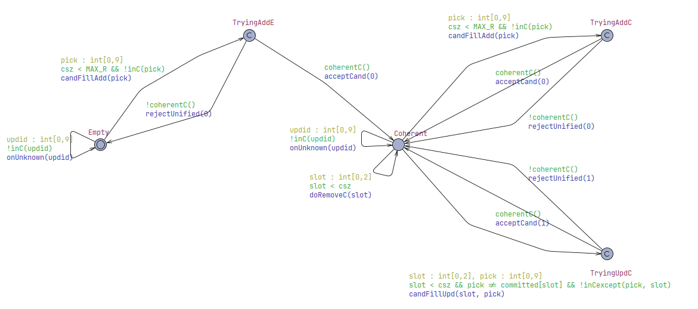
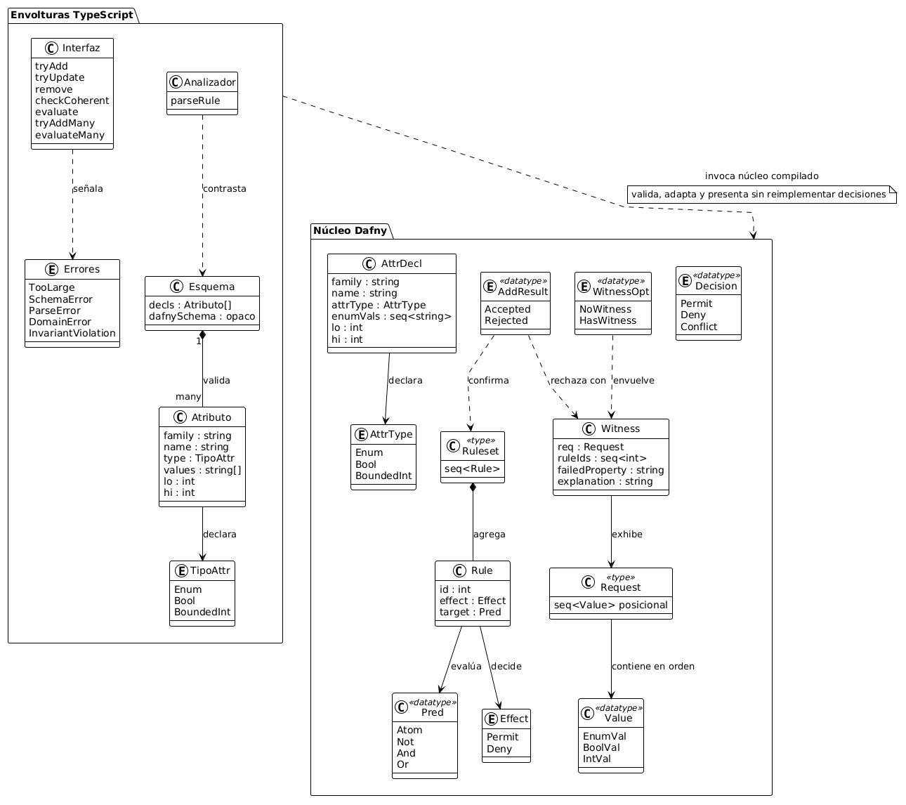

Facultad de Ingeniería de Producción y Servicios
Escuela Profesional de Ingeniería de Sistemas
FERIA DE PROYECTOS 2026
“Verificación formal de coherencia en políticas ABAC”
Docente asesor: Molina Barriga, Maribel
Problema y justificación
-
Entornos críticos dinámicos: hospitales y entidades públicas rotan turnos y guardias continuamente.
- La edición manual introduce fallas silenciosas: bloqueos en urgencias o filtración de datos.
- Explosión combinatoria (NIST SP 800-162): 64 800 solicitudes en el esquema v1 superan al muestreo empírico.
- Brecha SMT (NIST SP 800-192): invocar resolvedores en producción añade latencia y timeouts.
Propuesta (CbC): núcleo demostrado en Dafny y compilado a JS puro, sin SMT en ejecución.
Propiedades de coherencia (P1–P4)
- P1 — Consistencia: ninguna solicitud válida activa simultáneamente una regla de permiso y una de denegación.
- P2 — Satisfacibilidad: cada regla cuenta con al menos una solicitud válida que la activa (sin reglas muertas o vacías).
- P3 — No sombreado: cada regla determina en solitario al menos una solicitud (previene redundancias y duplicadas).
- P4 — Validez de esquema: toda regla usa atributos declarados, operadores compatibles y literales dentro de rango.
Invariante canónico: Coherent(R) ≜ P1(R) ∧ P2(R) ∧ P3(R) ∧ P4(R) sobre dominio finito y decidible.
Objetivos y alcance acotado
Objetivos y escalabilidad acotada
- Meta general: diseñar, verificar e implementar un verificador ABAC en Dafny → JS con preservación inductiva, validado en UPPAAL y empaquetado en npm.
- Interfaz guardada:
tryAdd,tryUpdate,remove,tryAddManyy evaluación linealevaluate/evaluateMany. - Límites explícitos (
TooLarge): máx. 16 valores por enum, máx. 64 reglas verificadas y 1 000 000 solicitudes en espacio cartesiano.
Límites y exclusiones explícitas
- Sin PIP en vivo: sin consultas de red, bases de datos ni relojes externos; atributos acotados al esquema.
- Sin lógica abierta: sin cadenas libres, regex ni comparaciones entre dos atributos (solo atributo vs literal).
- Sin resolución laxa: no hay prioridades tipo deny-overrides; todo solapamiento es error P1.
- Sin PEP/PDP ni historial: enfocado exclusivamente en decisión y coherencia.
Comparativa con trabajo previo
| Enfoque | Paradigma formal | SMT en ejecución | Guarda inductiva | Testigo | Despliegue |
|---|---|---|---|---|---|
| XACML (Turkmen) | Traducción SMT | Requerido (Z3) | No | Modelo SMT | Servicio externo |
| ABAC (Liu et al.) | Partición y grafos | No | No | Par de reglas | Algoritmo local |
| AWS Zelkova / BPA | Reducción SMT | Requerido (Z3) | No | Contramodelo SMT | Nube AWS |
| Cedar (Cutler) | Verificación (Lean) | Opcional | No | Diagnóstico sintáctico | Binario Rust / WASM |
| Mohawk / ARBAC | SMT / Reachability | Requerido | No (a posteriori) | Traza de transición | Herramienta CLI |
| Verificador propuesto | CbC (Dafny + UPPAAL) | Ninguno (Dafny → JS) | Sí (AddPreserves) | Tupla (req, rᵢ, rⱼ) | Nativo npm (JS / TS) |
Metodología y artefactos
Metodología CbC en 5 fases
- Fase 1 — Modelado: sintaxis abstracta, semántica y espacio
AllRequests. - Fase 2 — Deducción: propiedades P1–P4 y 7 lemas con Z3 y cvc5.
- Fase 3 — Model checking: autómata Admin y 9 consultas TCTL en UPPAAL.
- Fase 4 — Compilación: síntesis a JS puro y frontera TypeScript.
- Fase 5 — Validación: fixtures clínicos y regresión automatizada.
Herramientas y estándares
- Dafny 4.11 + Z3 / cvc5: especificación, prueba deductiva y compilación JS.
- UPPAAL 5.0: verificación temporal de estados y ausencia de deadlocks.
- TypeScript 5.x + Node 20+ / Bun 1.x: tipado, pruebas y paquete npm.
- Biome 1.9+: formateo y análisis estático sin errores.
- Estándares: NIST SP 800-162, NIST SP 800-192, XACML 3.0 y IEEE.
Arquitectura en tres capas

-
1. Capa de núcleo (Dafny): seis módulos formales (
Schema,Syntax,Eval,Coherence,Transition,BoundedCheck) compilados a JavaScript. - 2. Capa de envolturas (TypeScript): carga de esquema, analizador, adaptadores, control de topes y explicaciones sin recalcular decisiones lógicas.
-
3. Capa de distribución (npm): paquete
@grupo1/abac-verifiercon tipos para Node.js y navegadores.
Fases de verificación (P1 a P4)

Orden determinista en
CheckCoherent: evalúa secuencialmente P1 → P2 → P3 → P4 y retorna el primer testigo mínimo; parseRule valida sintaxis y esquema en la frontera TypeScript.
Núcleo formal en Dafny
Transition.dfy — Guarda e invariante inductivo
function TryAdd(R: Ruleset, r: Rule, schema: Schema): AddResult {
var w := CheckCoherent(R + [r], schema);
if w.NoWitness? then Accepted(R + [r])
else Rejected(w.wit)
}
lemma AddPreserves(R: Ruleset, r: Rule, schema: Schema)
ensures match TryAdd(R, r, schema)
case Accepted(rs) => Coherent(rs, schema)
case Rejected(_) => true
{
var w := CheckCoherent(R + [r], schema);
if w == NoWitness {
CheckCoherentSound(R + [r], schema);
}
}7 lemas (114 metas, 0 errores)
- EmptyCoherent: conjunto vacío vacuamente coherente.
- AddPreserves y UpdatePreserves: toda confirmación vía
TryAdd/TryUpdatepreservaCoherent. - RemovePreservesCoherent:
TryRemovepreserva coherencia por monotonía. - EvaluateAgreesOnCoherent: en estados coherentes,
Conflictes inalcanzable. - WitnessSoundness y Completeness: todo rechazo da testigo real y toda falla es rechazada.
Model checking en UPPAAL


9 consultas TCTL satisfechas
- Modelo acotado: 16 solicitudes, 10 reglas candidatas (máx. 3), 23 estados y 529 transiciones.
- Seguridad:
A[] coherent()(16.7 s),A[] !deadlock(28.7 s) y preservación ante bajaslastOp == 2. - Alcanzabilidad:
cleanAccepted,E[] coherent()y rechazosrejP1,rejP2,rejP3yrejUnknownP4.
Envolturas en TypeScript

Frontera modular (@grupo1/abac-verifier)
schema.ts: carga segura (loadSchema), verificación de topes (checkCaps) y marshalling hacia Dafny.parser.ts: análisis sintáctico estricto con azúcar sintáctico (in,between).wrappers.tsybatch.ts:tryAdd,tryUpdate,remove,checkCoherent,evaluate,tryAddManyyevaluateMany.explain.tsyerrors.ts: explicación legible del testigo sin decidir y 5 errores tipados (TooLarge,SchemaError,ParseError,DomainError,InvariantViolation).
Casos de estudio y validación
Ejecución real sobre fixtures clínicos (
bun test)
1. Conflicto en emergencia (emergency-override.json):
Permit where environment.emergency == true
Deny where environment.hour >= 18
→ Rejected (P1, reglas [1, 2]): Permit rule #1 and Deny rule #2 both fire when …, environment.hour=18, environment.emergency=true.
2. Política acotada coherente (clean.json):
→ Accepted (ids [1, 2, 3]) · evaluate(): 0.08 ms (costo lineal O(|R|), {"decision":"Permit","firingRuleIds":[3]}).
Métricas verificadas
- Núcleo Dafny: 6 módulos (~48 KB), 7 lemas principales, 114 metas verificadas.
- UPPAAL: 23 estados, 529 transiciones, 9/9 consultas TCTL, 0 interbloqueos.
- Suite automatizada:
parser.test.ts,wrappers.test.tsyreplay.test.ts(27/27 pruebas, 86 aserciones). - 5 fixtures JSON:
clean,contradictory(P1),unsatisfiable(P2),shadowed(P3) yemergency-override(P1).
Gracias…
- “Debemos construir software que sea correcto por construcción, y no software cuyo comportamiento sea incierto hasta después de la entrega.” — Anthony Hall y Roderick Chapman
- Repositorio: https://github.com/microuni-unsa/afve-teo-turno-c-grupo-1-final